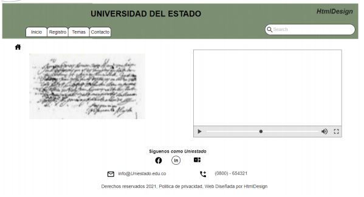

Desarrollar un sitio web como herramienta didáctica
“A raíz de la pandemia del COVID-19 la educación virtual ha venido a suplir la necesidad de la presencialidad, siendo usado por todas las instituciones educativas, esto ha traído como resultado la necesidad de elaborar recursos educativos digitales para dinamizar las estrategias de aprendizaje. Una estrategia la constituyen los Objetos virtuales de aprendizaje. Estos recursos son desarrollados por empresas que diseñan contenidos multimediales e interactivos, basados en HTML5, CSS3 entre otras tecnologías. La empresa HtmlDesign, de la que usted es Diseñador Web ha sido contratada por la universidad del Estado para diseñar 5 Objetos Virtuales de aprendizaje de los temas de Diseño de Sitios Web. 2 En esta etapa se inicia el diseño y la construcción del sitio web . Para el desarrollo del proyecto se debe presentar al cliente, un boceto el cual es el mockup de la página principal del sitio Web. Y si el cliente aprueba ese mockup se procede con la construcción del sitio web”
Navegar
* Formulario inicial en el cual el usuario puede ingresar a cuatro opciones, en la inicial hay un texto breve y un video alusivo a la universidad.
* Registro, tiene dos sub menús nuevo estudiante y cambio de clave. En el nuevo estudiante se registraran los datos y asignara password
* Restablecer clave, el usuario ingresa algunos datos de autenticación responde pregunta y actualiza clave

* En temas se despliega un sub menús con los temas propuestos el usuario da click, ejemplo Etiquetas Básicas de HTML, se abre un objeto y el usuario escoge el tema Ej (Atributos)

- Menu de contacto en el cual el usuario dejara alguna observación y dejara algunos datos basicos

Contenidos y referentes bibliográficos
- Recio García, J. A. (2016). HTML5, CSS3 y JQuery: curso práctico. RA-MA Editorial. (Pág. 52 a 108) Recuperado de https://elibro-net.bibliotecavirtual.unad.edu.co/es/ereader/unad/106494?page=52
-Terán Anciano, J. (2016). Manual de Introducción al lenguaje HTML. Formación para el Empleo. Editorial CEP, S.L. Recuperad de https://elibro-net.bibliotecavirtual.unad.edu.co/es/ereader/unad/50964?page=134
-Avila Pérez, M. (19,11,2020). O.V.I. Aplicando Hojas de Estilo en Cascada CSS. [Archivo de Video]. Recuperado de https://repository.unad.edu.co/handle/10596/37679
-Ochoa Torres, J. (04,12,2018). O.V.I. Definición de HTML5. [Archivo de Video]. Recuperado de http://hdl.handle.net/10596/22593